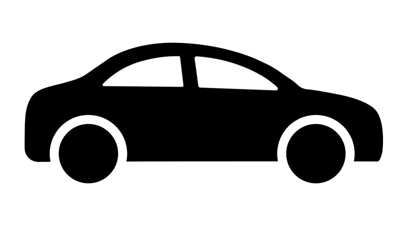

交通資訊
造訪北埔迷人風土人情，從短短200公尺 老街尋找純樸客家情意。
交通位置
乘車資訊
高鐵
---搭乘台灣高鐵於「新竹站」下車後可轉搭【台灣好行獅山線】於北埔老街站下車後步行約3分鐘至鄉公所。

火車
搭乘西部幹線至「新竹站」下車後
轉搭新竹客運【新竹-下公館】線於竹東總站下車後→再轉搭【竹東-北埔】線/【竹東-獅山】線/
【竹東-珊珠湖(經北埔)】
線於北埔站下車後步行約3分鐘至鄉公所。
搭乘西部幹線至「竹北站」/「竹東站」下車後
可轉搭【台灣好行獅山線】於北埔老街站下車後步行約3分鐘至鄉公所。

自行開車
南下
國道3號竹林交流道(往竹東方向)→120縣道(往橫山鄉方向)→右轉中豐路一段(台三線)→
於北埔南興街左轉→中興街左轉(北埔秀巒公園牌坊)→公有(鄧南光)停車場。
北上
國道3號寶山交流道→寶山路二段→寶山路一段→中山路→南興街右轉→中興街左轉(北埔秀巒公園牌坊)→公有(鄧南光)停車場。